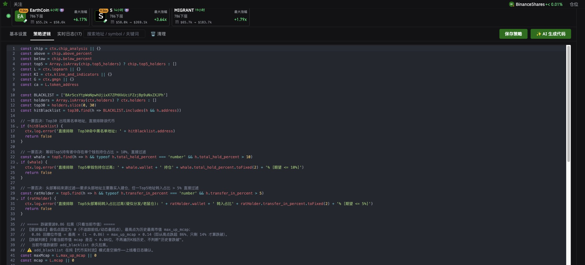

策略逻辑:写判断代码
基本设置管的是「什么时候触发、命中了怎么下单」,策略逻辑管的是「命中之后到底要不要它」。这里是一段 JavaScript,平台把数据塞进 ctx,你写代码决定放行还是排除。
贴代码是整段全部替换,不是追加。编辑器里始终只有一份脚本。拿到新代码就把里面原有的内容全选删掉再粘 —— 追加在后面会变成两段逻辑叠在一起,轻则重复判断,重则直接报错。改完记得点右上角
保存策略。

策略逻辑标签页。顶上那排是这条策略最近命中的币,下面就是代码编辑器。
代码里的基本套路
| 写法 | 作用 |
|---|---|
| return false | 排除这个代币,不命中。图里那几段「一票否决」都是查到问题就直接 return false。 |
| ctx.log.error(...) | 写一条日志,在 实时日志 标签里看。排除的时候顺手把原因和实际数值打出来,不然上线之后不知道为什么没命中。 |
| || {} 和 Array.isArray(...) | 取数据前先兜底。某些数据源在特定触发方式下拿不到(见下表),不兜底会直接抛错。 |
ctx 上挂着什么
| 数据源 | 里面有什么 |
|---|---|
| ctx.chip_analysis | 筹码分析。图里用到 above_percent、below_percent、top5_holders(前五大持有者数组)。 |
| ctx.holders | 持有者列表,是个数组,可以 slice(0, 30) 取 Top30。每项上有 address、total_hold_percent(持仓占比)、transfer_in_percent(转入占比)。 |
| ctx.logearn | LogEarn 自己的数据,图里用到 token_address、mcap(当前市值)、max_up_mcap(历史最高市值)。 |
| ctx.kline_and_indicators | K 线和技术指标。 |
| ctx.gmgn | GMGN 的数据。 |
能拿到哪些数据取决于触发方式。信号触发和策略触发能用全部;Token 实时流只有
logearn 和 signals —— 在实时流策略里写 ctx.holders 或 ctx.chip_analysis 是拿不到东西的,所以那几行 || {} 的兜底不能省。
图里那段代码在做什么
官方这段是典型的「一票否决」写法 —— 一层层查,查到雷就排除,全过了才算命中。
| 检查 | 逻辑 |
|---|---|
| 黑名单地址 | Top30 持有者里出现黑名单地址,直接排除。 |
| 单钱包持仓过高 | 筹码 Top5 里只要有一个钱包持仓占比 > 10% 就排除 —— 防大户砸盘。 |
| 头部筹码来源 | Top5 里任一地址转入占比 > 5% 就排除。要求头部地址的筹码主要靠买入建仓,转入占比高说明是分发或老鼠仓。 |
| 跌破斐波 0.86 | 最低点固定为 0、最高点取历史最高市值 max_up_mcap,0.86 回撤位 = max_up_mcap × 0.14。当前市值跌破这条线就拉黑。只看当前市值,不遍历 K 线历史,所以不会因为「历史曾跌破」而误杀。 |
代码注释里自带的一个坑。官方在跌破拉黑那段标了个 ⚠️:
add_blacklist 在纯「代币实时流」模式下是空操作 —— 代码照跑不报错,但黑名单实际没写进去。用实时流触发的话,上线后要去实时日志里确认一遍到底有没有生效。